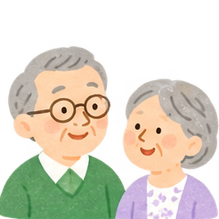

高齢者・介護について
「介護が必要かも」と思ったら、
まず相談できます
介護サービスを使いたい、もの忘れが気になる、一人暮らしの家族が心配、介護する家族が疲れている——。そんなときの相談先や、介護サービスの始め方を案内します。

こんなときに
気になることから選んでください
まず相談する
地域包括支援センターは、高齢者の総合相談窓口です
介護・福祉・健康・医療など、高齢者の生活について幅広く相談できます。諫早市には5つの圏域に地域包括支援センターがあり、保健師等・社会福祉士・主任ケアマネジャーなどの専門職が相談に応じます。
「介護保険を使えるか分からない」「何を利用したらよいか分からない」という段階でも相談できます。
介護サービスを利用したい
介護サービス利用までの流れ
介護保険サービスを利用する場合は、原則として市へ要介護・要支援認定を申請します。まず相談してから進めてもかまいません。
- 1まず相談
地域包括支援センターや市の介護保険担当窓口へ。今の生活で困っていることを整理します。
- 2要介護・要支援認定を申請
介護保険サービスが必要な場合、市へ認定を申請します。申請を代行してもらえる場合もあります。
- 3本人の状態を確認
認定調査と主治医意見書をもとに、生活の中でどのくらい介護が必要かを確認します。
- 4認定結果
要支援1・2、要介護1〜5などの結果が通知されます。認定結果は申請から原則30日以内です。
- 5ケアプランを作る
本人・家族の希望を踏まえ、必要なサービスを考えます。要介護ではケアマネジャー、要支援では介護予防支援等が中心になります。
- 6サービス利用開始
訪問介護、デイサービス、訪問看護、福祉用具、ショートステイなど、生活に合うサービスを利用します。
認定されなかった場合でも、相談は終わりではありません。
地域の介護予防や生活支援などを利用できる場合があります。地域包括支援センターなどへ相談してください。
地域の介護予防や生活支援などを利用できる場合があります。地域包括支援センターなどへ相談してください。
もの忘れ・認知症
「年齢のせいかな？」と迷う段階でも相談できます
こんな変化が気になるとき
- 同じことを何度も聞く
- 薬やお金の管理が難しくなった
- 約束や予定を忘れることが増えた
- 外出して帰り道が分からなくなることがある
- 家族としてどう接したらよいか迷う
介護する家族へ
介護する人自身も相談できます
「自分が頑張らないと」と抱え込まず、家族の負担についても相談できます。介護保険サービスや地域の支援を組み合わせて、家族だけで支え続けない方法を考えます。
地域で使える支援を探す
相談したあと、自分でも地域の支援を探せます
いさはやの地域資源集
生活支援、介護予防、地域の集まりなどを、お住まいの地域ごとに探す参考になります。
地域資源集を見る ↗介護サービス情報公表システム
訪問、通所、短期入所、施設など、全国の介護サービス事業所を検索・比較できます。
介護サービスを探す ↗諫早市デジタルマップ
諫早市の公共施設などを地図上で確認できます。
デジタルマップを見る ↗もう少し詳しく探したいときは
「諫早市 ＋ 認知症カフェ」「諫早市 ＋ 介護予防教室」など、地域名と支援の名前を組み合わせて検索すると見つけやすくなります。
「諫早市 ＋ 認知症カフェ」「諫早市 ＋ 介護予防教室」など、地域名と支援の名前を組み合わせて検索すると見つけやすくなります。
自宅療養・看取り
これからの療養や最期の過ごし方も相談できます
こんなときに
- 退院後、自宅で生活できるか心配
- 訪問診療や訪問看護について知りたい
- 家で最期まで過ごせるか知りたい
- 本人の希望を家族で話しておきたい
- ACP・人生会議について知りたい
情報源
公的な情報を確認しています
情報確認日：2026年10月4日